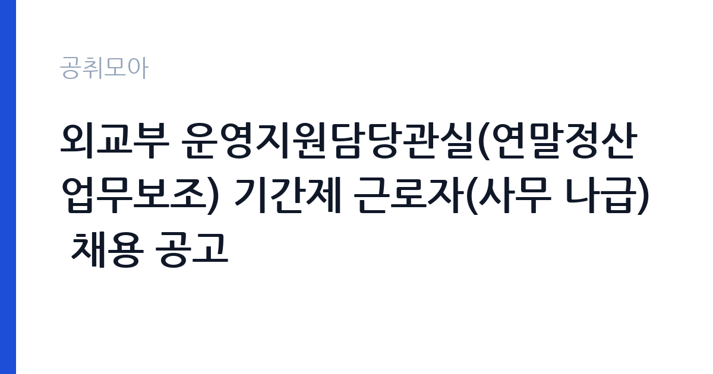

[국가기관] 외교부 운영지원담당관실(연말정산 업무보조) 기간제 근로자(사무 나급) 채용 공고
외교부 · 서울 · 마감 2026-11-13 (D-14) · 출처 나라일터

한눈에 보는 모집 조건
| 기관 | 외교부 |
|---|---|
| 공고명 | 외교부 운영지원담당관실(연말정산 업무보조) 기간제 근로자(사무 나급) 채용 공고 |
| 고용형태 | 기간제 |
| 근무지 | 서울 |
| 게시일 | 2026-10-30 |
| 마감일 | 2026-11-13 (D-14) |
지원자격, 이렇게 읽으세요
- 기간제 근로자(사무 나급) 3명
- 접수 ~2026-11-13 마감
- 세부 조건은 원문 공고문 확인
기간제 근로자는 근로계약 기간이 정해진 신분입니다. 계약 기간과 갱신 가능 여부가 근로계약서에 명시되며 기간 만료 시 근로관계가 종료됩니다. 결원 보충이나 특정 사업 기간에 맞춰 채용되는 경우가 많아 업무 범위가 명확합니다. 이번 공고는 외교부에서 직접 진행하는 자체 전형으로, 응시자격과 제출서류는 공고문에 항목별로 제시됩니다. 행정·사무 직무는 학력과 경력을 함께 보되 실무 경험을 우대하는 경우가 많습니다. 회계 직무는 전산회계나 세무 관련 자격을 우대하고 공공기관 경력자는 가점 대상이 됩니다. 문서 작성 능력과 엑셀 활용 능력은 서류와 면접에서 모두 평가됩니다. 채용 신분이 공무직, 기간제, 임기제 중 무엇인지에 따라 근무 기간과 신분이 달라지므로 먼저 확인해야 합니다. 결격사유 조회는 공통 절차입니다. 서류는 접수 마감 이후 보완이 되지 않으므로 자격 요건과 증빙 서류를 마감 전에 모두 갖춰야 합니다. 공고문에 명시된 우대 사항은 해당 여부를 확인해 증빙을 첨부해야 가점이 반영됩니다. 응시 자격 판단이 애매하다면 접수 전에 채용 담당 부서로 문의하는 편이 안전합니다. 서류 제출 후에는 소명 기회가 없습니다.
이 공고의 포인트
이 공고의 첫 번째 포인트는 고용 형태입니다. 계약 기간이 정해져 있어 근무 종료 시점이 명확합니다. 그만큼 짧은 기간에 어떤 실적을 남길지가 중요해집니다. 두 번째는 업무 범위가 명확하다는 점입니다. 행정·사무 직무로 채용되므로 배치 이후 담당 업무가 크게 흔들리지 않습니다. 세 번째는 근무지입니다. 서울 지역 근무로 접근성은 좋지만 그만큼 지원자가 몰리는 지역이므로 경쟁률을 넉넉히 잡아야 합니다. 접수 기간이 길지 않아 서류 준비와 자격 확인을 동시에 진행해야 합니다. 같은 직무로 함께 올라온 공고 가운데 접수 마감이 가장 늦은 편이라 준비 시간을 상대적으로 확보할 수 있습니다. 다만 선발 인원이 3명으로 많지 않아 자격을 갖춘 지원자가 몰리면 경쟁률이 높아질 수 있습니다.
전형은 어떻게 진행되나
서류전형과 면접전형 외에 직무수행능력 평가가 붙는 경우가 있습니다. 평가 방식은 공고문에 구체적으로 적혀 있으므로 어떤 항목에 배점이 높은지 먼저 파악하십시오. 면접에서는 지원 동기보다 실제 업무 경험에 대한 질문이 많고, 답변의 구체성이 평가를 가릅니다. 전형 일정은 서류 마감 이후 빠르게 진행되므로 연락 가능한 번호를 정확히 기재하고 문자와 메일을 수시로 확인해야 합니다. 최종 단계에서는 결격사유 조회와 신체검사가 진행됩니다. 경력 증명서에 직무 내용이 적혀 있지 않으면 인정받지 못할 수 있으므로 상세 기재를 요청하십시오.
원문에서 확인한 전형 방식
외교부 운영지원담당관실은 붙임과 같이 기간제 근로자(사무 나급)을 채용하고자 하니, 역량있는 분들의 많은 지원 바랍니다. ㅇ 채용 직종 및 인원 : 기간제 근로자(사무 나급, 연말정산 업무보조) 3명 ㅇ 공고 및 원서접수 : 2026.10.30(금) - 11.13(금) 24:00까지 ㅇ 지원 관련 자세한 사항 및 응시원서 양식 등은 별첨 참조. 끝.
이런 분께 추천해요
- 문서 작성과 엑셀 활용이 능숙한 분
- 여러 업무를 동시에 정리할 수 있는 분
- 회계·예산 실무 경험이 있는 분
지원 전 체크리스트
- 응시자격 요건과 경력 기준을 충족하는가 — 경력은 증명서로 입증해야 합니다
- 계약 기간과 근무 시작일·종료일을 확인했는가
- 제출서류 목록을 모두 준비했는가 — 누락 시 서류 단계에서 탈락합니다
- 접수 마감 2026-11-13 이전에 접수 방식을 확인해 제출했는가
모집 일정과 제출 타이밍
공고 게시일은 2026-10-30, 접수 마감은 2026-11-13입니다. 준비 기간은 약 14일로 서류 준비와 자격 증빙을 함께 처리하기에는 넉넉하지 않은 편입니다. 첫 이틀 안에 공고문과 첨부 서식을 내려받아 요건을 확인하고 남은 기간에 증빙 서류를 발급받는 일정이 현실적입니다. 면접은 서류 합격자 발표 후 짧은 간격으로 진행되는 경우가 많으므로 서류 제출과 동시에 면접 준비를 시작하는 편이 안전합니다. 마감일에는 접수 시스템이 몰리므로 하루 전까지 제출을 마치는 것이 좋습니다. 제출 서류는 공고문에 적힌 순서대로 정리하면 담당자가 확인하기 쉬워 누락이 줄어듭니다. 서울 근무지는 대중교통 접근성이 좋은 대신 주차와 통근 시간이 변수입니다. 출퇴근 경로를 미리 확인하십시오. 마감까지 2주 안팎이 있어 준비할 시간은 있지만 미루면 촉박해집니다. 선발 인원이 소수라 면접에서 변별력이 크게 작용하는 전형입니다.
직무 이해하기: 국가기관
외교부는 외교 정책 수립과 조약, 재외국민 보호, 국제 협력을 담당하는 중앙행정기관입니다. 본부 부서는 지역국과 기능국으로 나뉘고, 운영지원 부서는 예산·회계·인사 같은 내부 행정을 맡습니다. 기간제 사무인력은 연말정산이나 회계 보조처럼 시기가 정해진 업무를 담당하는 경우가 많습니다. 보안 서약과 비밀 유지 요건이 엄격하고, 문서 처리의 정확성이 특히 강조됩니다. 행정·사무 업무는 부서 운영을 지원하는 실무 전반을 맡습니다. 문서 작성과 결재 처리, 예산 집행과 정산, 물품 구매와 자산 관리가 기본 업무입니다. 민원 응대와 전화 안내, 회의 준비와 기록도 일상적으로 발생합니다. 회계 업무가 붙으면 지출 증빙 검토와 세금 계산서 처리, 결산 자료 작성까지 포함됩니다. 업무가 여러 갈래로 동시에 들어오기 때문에 우선순위 관리가 실력의 핵심입니다. 업무는 혼자 처리하기보다 부서 단위로 나눠 진행되므로 담당 구역과 협업 범위를 입사 초에 확인하는 것이 중요합니다. 업무 매뉴얼과 지침이 문서로 정리되어 있어 절차를 익히면 반복 업무는 빠르게 손에 붙습니다.
자기소개서 작성 팁
행정·사무 지원서는 실무 경험을 업무 단위로 정리하는 것이 효과적입니다. 담당했던 문서 종류와 처리 건수, 예산 규모, 개선한 절차를 구체적으로 쓰십시오. 반복 업무를 자동화하거나 서식을 개선한 경험은 강한 소재입니다. 정확성과 마감 준수를 보여주는 사례를 반드시 한 개 이상 넣으십시오. 직무 경험이 많지 않다면 경험의 양보다 과정을 구체적으로 쓰는 편이 낫습니다. 어떤 상황에서 무엇을 판단했고 어떤 결과가 나왔는지 순서대로 서술하면 신뢰가 생깁니다. 지원 동기와 기여 방안은 한 문단씩 짧게 유지하고, 가장 자신 있는 경험에 분량을 몰아주십시오. 마지막 문장은 포부보다 구체적인 실행 계획으로 끝내는 것이 좋습니다.
면접 준비 포인트
면접에서는 업무 처리 방식과 정확성을 확인합니다. 마감이 겹치는 업무를 어떻게 정리할지, 상급자 지시가 여러 갈래로 들어올 때 어떻게 처리할지 묻습니다. 회계 업무라면 증빙이 맞지 않을 때 어떻게 대응하는지가 핵심 질문입니다. 엑셀 함수 활용이나 문서 작성 경험을 구체적으로 답하면 신뢰를 줍니다. 답변은 상황, 판단, 조치의 순서로 정리하면 전달이 분명해집니다. 모르는 질문에는 모른다고 밝히고 확인 방법을 제시하는 편이 억지 답변보다 낫습니다. 마지막에는 근무 의사와 함께 2026-11-13 이후 일정에 언제든 응할 수 있다는 점을 전달하십시오. 답변 시간이 짧게 정해져 있는 경우가 있으므로 핵심 문장을 먼저 말하고 근거를 붙이는 방식이 유리합니다.
급여·근무조건 읽는 법
외교부의 구체적인 보수 수치는 이 공고 원문의 처우 항목과 보수표에서 확인해야 합니다. 공시 자료로 확인되지 않은 금액은 이 글에서 추정해 제시하지 않습니다. 알리오 2025년 결산 공시 기준 공공기관 전체 일반정규직 1인당 평균보수는 7,376만 9천원, 신입사원 평균초임은 4,031만 6천원입니다(무기계약직 미포함). 행정·사무 직무의 보수는 채용 신분에 따라 달라집니다. 공무직은 기관 임금표의 기본급에 정액급식비·명절휴가비·복지포인트가 더해지고, 기간제는 계약 기간과 월급이 명시됩니다. 임기제공무원은 연봉등급제를 적용받습니다. 초과근무수당과 정근수당 포함 여부에 따라 실수령액이 달라지므로 원문 처우표를 보셔야 합니다. 2026년 적용 최저임금은 시급 10,320원, 월 환산 2,156,880원(주 40시간·209시간 기준)입니다. 고용노동부 고시 제2025-47호로 확정된 금액입니다. 공고문에 금액이 제시되지 않은 항목은 원문 보수표나 처우 설명에서 확인해야 하며 확인되지 않은 수치는 쓰지 않는 것이 원칙입니다. 비교할 때는 월 급여뿐 아니라 상여·명절휴가비·복지포인트·초과근무수당까지 포함한 연간 총액으로 계산하십시오. 기간제라면 계약 기간 동안의 총액을, 무기계약이라면 호봉 상승과 정년까지의 누적 소득을 기준으로 판단하는 편이 정확합니다.
자주 묻는 질문
- 선발 인원은 몇 명인가요?
공고문 기준 3명입니다. 직종별로 인원이 나뉘는 경우가 있으니 모집분야 항목을 함께 확인하십시오. - 근무지는 어디인가요?
서울 지역의 외교부 소속 근무지입니다. 세부 주소와 출퇴근 조건은 원문 공고문에서 확인할 수 있습니다. - 보수는 얼마인가요?
채용 신분(기간제)과 기관 임금 규정에 따라 정해지며 구체적인 금액은 공고문 처우 항목에 제시됩니다. 금액이 공개되지 않은 경우에는 원문의 보수표를 확인하십시오.
함께 보면 좋은 공고
[국가기관] 테스트 — 마감 2026-11-11[국가기관] 국무조정실·국무총리비서실 전문임기제공무원 채용 변경공고 — 마감 2026-11-09[국가기관] 육군 전투지위훈련단 BCTP 예비역 장성관찰관(군단 ·사단선임, 군단작전지속지원) 채용 공고 — 마감 2026-11-09출처: 나라일터 공개정보를 바탕으로 공취모아가 정리한 안내글입니다. 모집 조건·일정은 변경될 수 있으니 지원 전 반드시 원문 공고문을 확인하세요. 본 글은 정보 제공용이며 합격을 보장하지 않습니다.